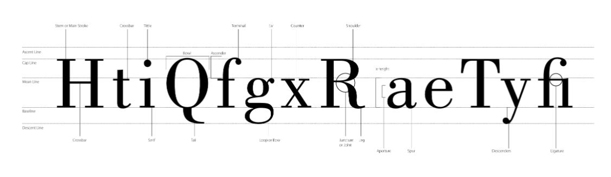

Typografi
For at skabe et godt harmonisk og balanceret design er det en fordel, at have styr på farvepsykologi, farve skemaer og farvehjulet. Disse ting er med til, at vi bedst muligt kan sammensætte de rigtige farver for at lave et godt design, som fanger øjet.
De 3 typografiske hovedområder
Læsetypografi- Traditionel tekst med overskrifter og brødtekster
- Bruges ofte som blikfang, eksempelvis i logoer eller i opmærksomhedsskabende overskrifter.
- Bruges til hurtige opslag som eksempelvis navne/adresse lister.
- Denne tekst er hurtig at få øje på
Font anatomi
{kind=link}
Klik på billedet for at forstørre - du vil blive videresendt til en anden side
Kilde: http://typeplate.com/img/type-anatomy.jpg
Typeface
Fontfamily:
Kan eksempelvis være skrifttypen Arial
- Normal
- Fed (bold)
- Kursiv (italic)
- Fed kursiv (bold italic)
Font klasifikationer
Serif/antikva
- Tekst med fødder
- Bruges som brødtekst
- Kursiv (italic)
- Gør store tekster nemt læselige, pga fødderne, som danner linjer.
Sans serif
- Tekst uden fødder
- Benyttes oftest til overskrifter
- Benyttes på moderne hjemmesider
- Gør store tekster nemt læselige, pga fødderne, som danner linjer.
Typografiske begreber
Læsetypografi
Minuskler:
De små bogstaver
Majuskler:
Også kaldet versaler eller blogbogstaver, som er STORE bogstaver.
X-height:
Er højden på små bogstavers x. målt fra toppen til bunden af bogstavet. X-height bruges til at parre typefaces.
Leading:
Linjeafstand som måles fra bundlinje til bundlinje.
Kerning:
Bruges til at bestemme afstanden mellem hvert enkelt bogstav. Bruges eksempelvis til at lave luft mellem bogstaverne i et ord.
Gratis vs. Betalte fonte
Fordele ved de gratis fonte:- Stort udvalg
- Det gratis
- Mulighed for at eksperimentere
- Ofte findes der kun 1 weightanske bogstaver kan mangle
- Danske bogstaver kan mangle
- Kan have problemer med kerning (afstanden mellem bogstaverne)
- Gennemarbejdet og høj kvalitet
- Større mulighed for at fonten indeholder forskellige weights
- Danske bogstaver er med
- Må benyttes kommercielt
- Kan koste mange penge
- Prisen kan afhænge af visninger på et website eller antal print
- Kan koste penge og alligevel ikke gennemarbejdet.
Typografi walk opgave
Vi har i forbindelse med dette emne været på typografi-walk i Viborg, hvor formålet var at se på bybilledet med typografiske øjne.
Opgaven gik ud på at finde så mange forskellige eksempler på typografi som muligt, indenfor nedenstående kategorier.
- Antik
- Moderne
- Tegnet
- Barnlig
- Farverig
- Opfindsom
- Uden kategori
Opgaven skulle efterfølgende oploades på padlet Klik her for at se vores padlet
Reflektioner
Jeg synes at denne opgave var rigtig inspirerende og lærerig. Jeg fik helt klart en bedre forståelse for typografi og vigtigheden af at bruge den rigtige skrifttype, på den rigtige måde. Jeg synes, at det er inspirerende at se hvordan andre har benyttet sig af forskellige typografier.
Kilder:
https://fronter.com/eadania/links/files.phtml/1682136815$970185400$/Fag/1.+semester/Design+og+visualisering/04+typografi/04_typografi.pdf
http://typeplate.com/img/type-anatomy.jpg